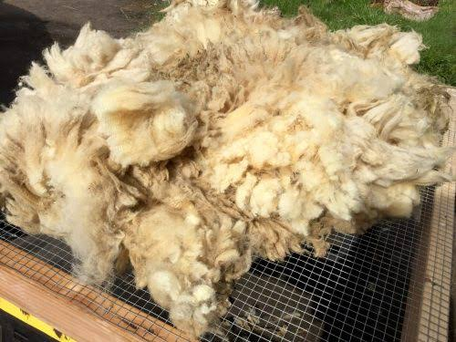

Nature's original performance fibre — we connect Indian spinners and mills with trusted suppliers of greasy and scoured wools and wool wastes around the world.

Raw wool and wool wastes are the backbone of India's woollen industry. We indent both to spinners and mills, matching origin, micron and quality to each buyer's exact requirement.
Wool regrows every year — a fibre the planet replenishes on its own.
Even wool wastes are regenerated into new yarns, blankets and felts.
We represent reputed wool suppliers from all over the globe.
Share your micron, origin and volume requirements — we'll indent the right lot from the right supplier.
Make an Enquiry